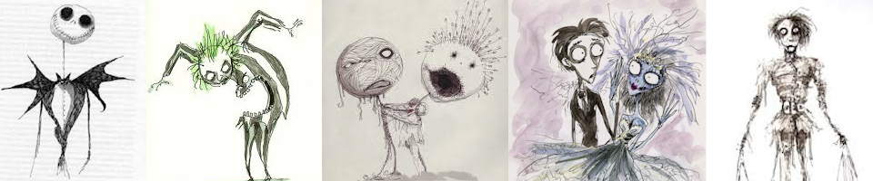
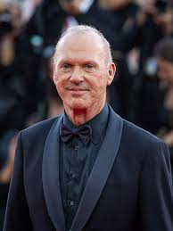
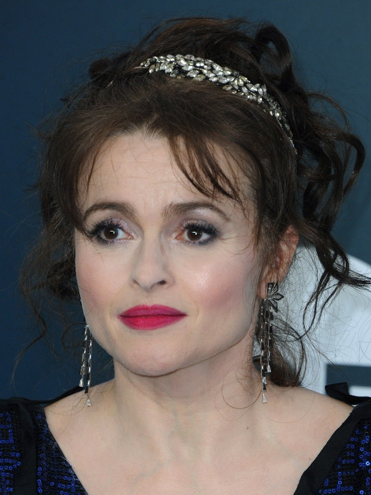
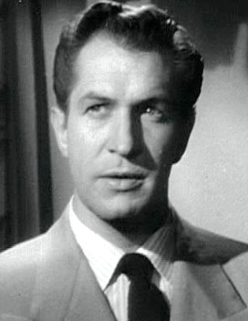

TIM BURTON, EL GENIO DE LO EXTRAÑO
El equipo burton
A lo largo de su trayectoria cinematográfica, Burton ha contado con los mismos profesionales en la mayor parte de sus obras, algo atípico en Hollywood. Por lo que otro rasgo destacable del director, más allá de su estilo artístico, es el gran equipo técnico que ha conseguido formar. Para que el rodaje fluya y se note el resultado de un buen trabajo es imprescindible que la química entre este grupo de personas, con las que a su vez comparte afinidades y una gran conexión, tenga que ser perfecta.
ACTORES RECURRENTES
Michael Keaton, con el que contó para Beetlejuice y que más tarde encarnaría al caballero oscuro, se convirtió en el primer actor fetiche de Tim Burton, aunque no por mucho tiempo.

A comienzos de los 90 fue remplazado por un joven Johnny Depp a raíz de la deslumbrante actuación que realizó en Eduardo Manostijeras. Y es que Johnny Depp se ha convertido en uno de los colaboradores por excelencia de Tim Burton.
Como muchos otros directores, Burton también tiene una musa. Esta sería Helena Bonham Carter, con la que mantuvo una relación sentimental durante muchos años. Se conocieron en el rodaje de El Planeta de los Simios y desde entonces han trabajado juntos en casi todas las películas del director. Podríamos decir que la carrera de esta actriz se divide en la etapa pre-burtoniana, en la que interpretaba a personajes más comunes y cercanos al mundo real y la burtoniana, dando un giro a su carrera profesional.
Finalmente, Vincent Price, el que era el ídolo por excelencia de Burton, era uno de los actores más conocidos por aparecer en películas de terror de bajo presupuesto en los años 60. Cumplió uno de los sueños del director al aparecer en la película de Eduardo Manostijeras, tras haber sido la principal inspiración del cortometraje Vincent y haberle prestado su voz al protagonista.